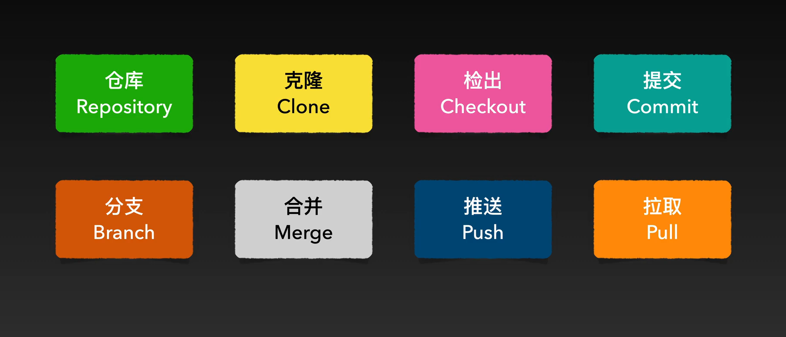
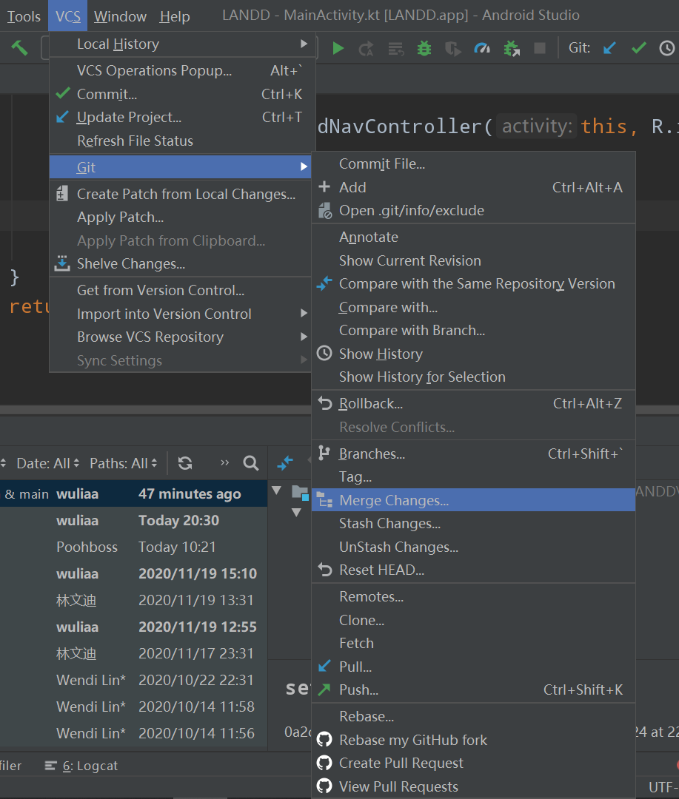

学习Git并使用Android Studio做git开发
git包括以下内容

Git工作流程
1.根据commit指令，git对文件进行一个项目快照，保存某一个时间点上某一个项目的全部内容，快照也可以叫版本。每一个快照都有一串十六进制的数字，这是快照的序列号，git用这一串序列号来识别某一个快照。
2.为了将不断创建的快照串接起来管理，git同时会创建一个线性结构，我们把它叫做分支—branch。缺省的分支名叫做master。git通过HEAD来访问某一个分支，head指向某一个分支的最新结点，就像单链表。每次我们执行新的commit指令，git就会创建新的快照，新的快照除了保存当前项目的最新内容之外，还会有一个引用或者一个指针指向它之前的那个快照，这样就环环相扣串了起来，同时head也会向后移动到最新的快照上。
3.修改历史：将以某一个快照为起点，创造一个新的分支new branch，同时将head移动到新的分支上面，然后在这个新的分支上面修改新的内容再commit。这两条分支在逻辑上是完全独立的。若这个分支重构完、测试完则可合并到主分支上，叫merge。
4.merge，是git中的难点，因为要解决冲突，所谓冲突就是不同的分支对相同部分做了不同处理，在合并时就要有所取舍。合并完就可以删除分支，删除分支只是删除这个入口，而不是删除工作痕迹。
使用Android Studio做git开发
1.在git的Log中可查看所有提交信息及内容
2.对代码进行修改或增加之后，点击右边绿条可commit或checkout
3.每新建一条分支，完善功能后可merge到主分支master里

4.对其他分支编辑完后，返回主分支
5.Android Studio 提供代码暂存操作